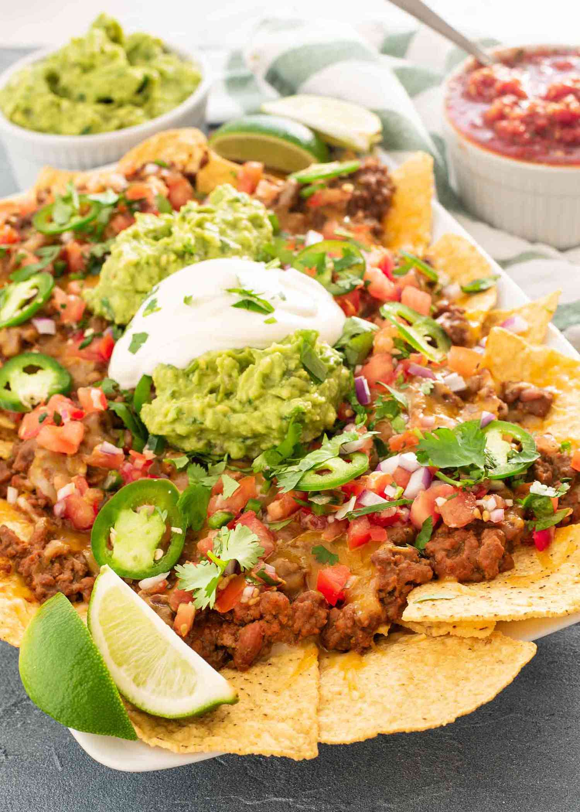

Nachos

Desciption
These nachos are loaded with cheese, meat, guacamole, and crema. Biting into these nachos is a world of flavors.
Ingredients
- Tortia chips
- Guacamole
- Ground Meat
- Beans
- Crema
- Cheese
Steps
- Grab your ground meat and cook it.
- Make your cheesse saouce.
- Make your beans.
- Make the guacamole.
- Layer chips onto plate.
- Add the Ingredients you made.
- Enjoy